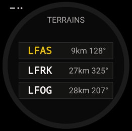
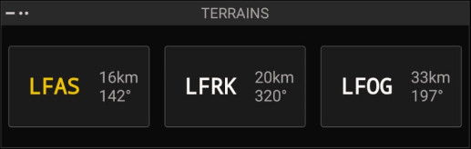

🛬
Terrains proches
Les 3 aérodromes les plus proches · triés par proximité
ANLFLD · analogique
NUMFLD · numérique (100%-1L)


Possibilités
- Les 3 aérodromes les plus proches : code OACI, distance, cap.
- Triés par proximité.
Gestes
·· Double-tap sur un terrain : ouvrir sa carte VAC
– Appui long : liste complète des terrains